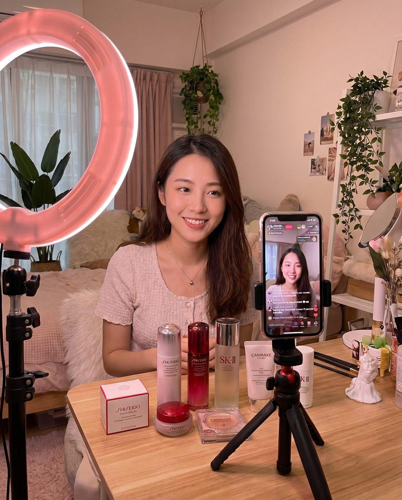
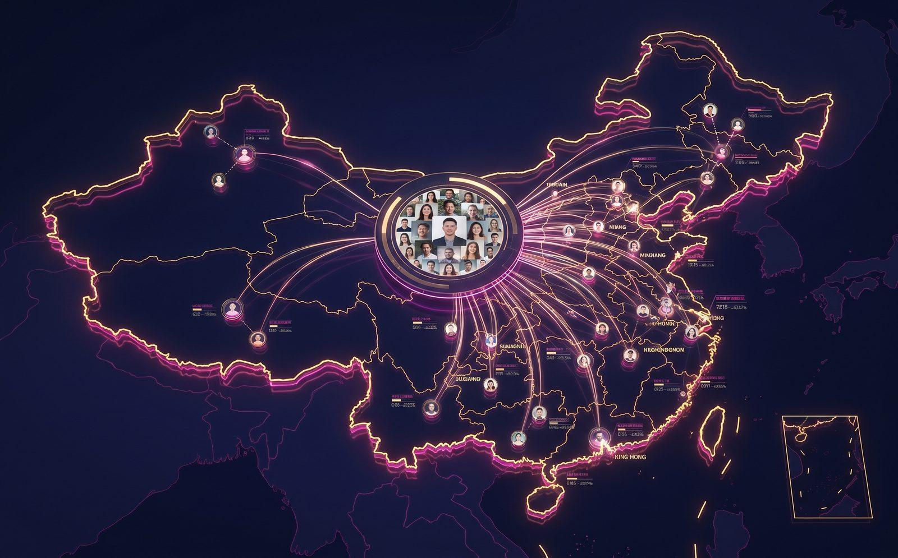

KOL / KOC INFLUENCER MARKETING
インフルエンサーの拡散力で、中国市場を動かす。
中国では「知人からの口コミ」が購買意思決定の最大因子です。PROTECHは500名以上のKOL/KOCネットワークから最適なインフルエンサーをマッチングし、認知拡大から購買転換まで戦略的に設計・運用します。

小紅書月間
アクティブユーザー
KOL推薦が購買
意思決定に影響
KOC施策の
広告比CPA改善効果
PROTECH連携
KOL/KOCパートナー
KOL / KOC Tier Structure
貴社目標に最適な
インフルエンサーを、
戦略的に選定する。
最大リーチと圧倒的ブランド認知。新規市場参入・大型キャンペーンに最適。
業界・ニッチ特化の高エンゲージメント。美容・グルメ・旅行専門ジャンルに深い影響力。
コミュニティへの強い信頼と高コメント率。地域密着型・実店舗集客に特に効果的。
最もリアルな体験談レビュー。購買直前の背中を押すラストワンマイル施策に最適。
Campaign Solutions
3つのキャンペーンソリューション
貴社のフェーズ（認知・検討・購買）に最適なKOL/KOCキャンペーンを一貫設計します。
口コミ体験型
プロモーション
ターゲット業界・地域・年齢層に最もマッチしたKOL/KOCが実際に貴社の商品・サービスを体験し、本音に基づいたレビューコンテンツを複数媒体へ投稿。信頼性の高い口コミが検索結果に積み上がり、継続的なSEO効果も発生します。
- ✓現地ネイティブによる3段階インフルエンサー審査・ブランドセーフティ確認
- ✓投稿ブリーフィング・コンテンツ監修・最終承認フロー完備
- ✓小紅書・抖音・WeChatへの横断的なコンテンツ展開


ライブコマース・
動画タイアップ
インフルエンサーがライブストリームで貴社の商品をリアルタイムに紹介・販売するライブコマース（直播）は、中国ECの主流チャネル。リハーサルから本番配信まで一貫サポートし、視聴者の購買衝動を最大化します。
- ✓抖音・淘宝ライブ・快手への配信プラットフォーム最適設計
- ✓中国語台本・セールストーク・演出構成の制作支援
- ✓ライブ中リアルタイムKPI追跡とオペレーションサポート
タコ足ネットワーク
拡散施策
1名のトップKOLが発信したコンテンツを、複数のマイクロKOL・KOCが二次拡散するネットワーク戦略。Tier 1〜4を組み合わせた複合施策設計で、最大リーチと深い信頼性を同時に実現します。
- ✓クロスティア複合施策設計でCPA最適化
- ✓UGC（ユーザー生成コンテンツ）の二次利用権管理
- ✓拡散ネットワークの可視化とインプレッション分析レポート

Campaign Flow
施策開始まで、4ステップ
ヒアリング・キャンペーン戦略立案
ブランド・ターゲット層・予算・競合状況をヒアリングし、最適なKOLティア構成・プラットフォーム配分・KPIを定義した施策計画書を作成します。
KOL/KOCリサーチ・選定・契約代行
PROTECH独自ネットワーク・データベースから候補者をリサーチし、フォロワー質・エンゲージメント率・ブランドフィットを評価。交渉・契約締結まで完全代行します。
コンテンツ制作・監修・投稿管理
ブランドガイドラインを遵守しつつ、KOLの自然な表現で書かれた投稿ブリーフィングを提供。投稿前のコンプライアンスチェック・最終承認を徹底します。
パフォーマンス分析・改善レポート
インプレッション・エンゲージメント・コンバージョン等を集計し、次回施策の改善提案を含む詳細レポートを提供。ROIを明確化します。
FAQ
よくある質問
KOLキャンペーンの予算の目安を教えてください。
KOCのみの口コミ施策は1名あたり数万円〜、マイクロKOLは1投稿あたり10〜50万円、ミドルKOLは50〜300万円、トップKOLは500万円〜が目安です。貴社の目標・期間・規模に応じた最適な予算配分を無料相談でご提案します。
投稿内容の確認・承認はできますか？
はい、全ての投稿はPROTECHが日本語に翻訳した上でご確認いただきます。ブランドガイドラインの遵守・虚偽表現の排除・炎上リスクのチェックを行った上で最終承認を取得してから投稿します。
日本で知名度がほぼないブランドでも施策は可能ですか？
はい、むしろゼロからブランドを作る段階こそKOL/KOCの口コミが最大の効果を発揮します。中国では新発見の喜びを共有するカルチャーが根強く、KOCによる「本当に良いもの」の発掘・拡散が特に力を持ちます。
施策効果はどのように測定しますか？
各プラットフォームのインサイト（インプレッション・エンゲージメント率・コメント・保存数）を取得し、目標KPIとの乖離分析を行います。さらにLPへのトラフィック変化、検索ボリューム増加、来店数・予約数の変動も合わせた統合レポートを提供します。
Let's Start Your Campaign
インフルエンサーの力で、
インバウンド集客を変える。
ターゲット層・予算・目標に合わせた最適なKOL/KOC施策設計を、無料でご提案します。まずはお気軽にご相談ください。